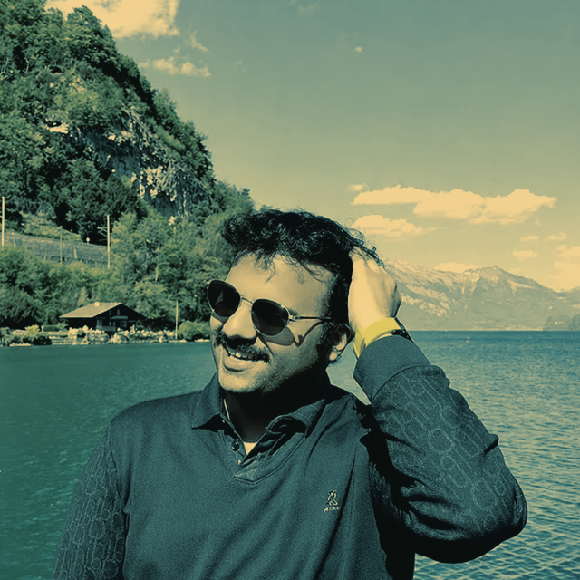
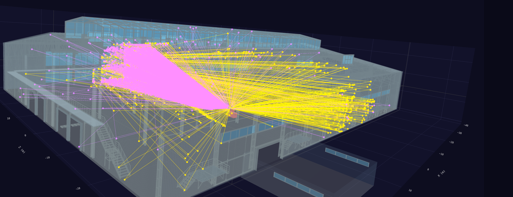

I contribute to the perception stack for autonomous systems — from radar signal processing to semantic 3D maps — and simulate how electromagnetic waves see the world before a single antenna is built.
I'm a Research Associate at Fraunhofer FHR in Bonn, where I work on radar perception, sensor fusion, and electromagnetic digital twin simulation — building ray-traced radar scenes with NVIDIA Sionna RT to model how automotive and robotic radar systems perceive complex environments before real hardware is involved.
My path here runs through two M.Sc. degrees — Robotic Systems Engineering at RWTH Aachen and Computer Science / AI at CUSAT, India — and industry stints at Sony India and Ignitarium (Neurealm), where I shipped AI camera modules on Qualcomm hardware and built real-time defect detection systems. My master's thesis at DLR Neustrelitz focused on Visual-LiDAR SLAM for autonomous waterway navigation.
I'm drawn to problems where simulation, signal processing, and robot learning intersect. I'm currently exploring World Models, VLA-based manipulation and autonomous navigation research in my free time. If you're working on radar simulation, multi-sensor perception, or robot learning, I'm always happy to connect.
Multi-sensor fusion pipelines combining automotive radar, LiDAR, and camera data for semantic 3D mapping and scene understanding.
Ray-traced radar channel simulation with NVIDIA Sionna RT — building indoor scenes like warehouse in Isaac Sim and Blender, for physically accurate propagation modeling.
Visual-LiDAR SLAM and occupancy mapping for autonomous vehicles.
Building toward VLA and manipulation research — working through the ETH Zurich Robot Learning curriculum alongside applied radar work.
An end-to-end pipeline for physically accurate radar simulation: warehouse scenes constructed in Isaac Sim with SimReady assets, then ray-traced with NVIDIA Sionna RT. Includes a custom Plotly-based 3D visualizer for path-level analysis by amplitude and angle of departure.

Deep learning pipeline using IR depth cameras to detect joint-bar faults along railway tracks, for GREX (USA).
Vision inspection system for raw-material quality control, for VKC (India) — cut test time from minutes to 20 seconds.
Denoising and keyword-detection techniques for voice-based deep learning, with synthetic training data, for Renesas (Japan).
Human pose estimation and custom object detectors for attire compliance checks, for Ericsson (Sweden).
Welding-tip trajectory planning for a UR10e collaborative robot using MoveIt.
Dual-cobot humanoid setup on a Franka Emika manipulator — VR teleoperation via Meta Quest 3 and imitation-learning policy training/deployment.
Watch demo →Autoencoder, diffusion, and GAN experiments, plus Blender-based synthetic data generation with domain randomization.
M.Sc. Robotic Systems Engineering
2022 — 2025M.Sc. Computer Science (Machine Intelligence)
2017 — 2019B.Tech Mechanical Engineering
2013 — 2017